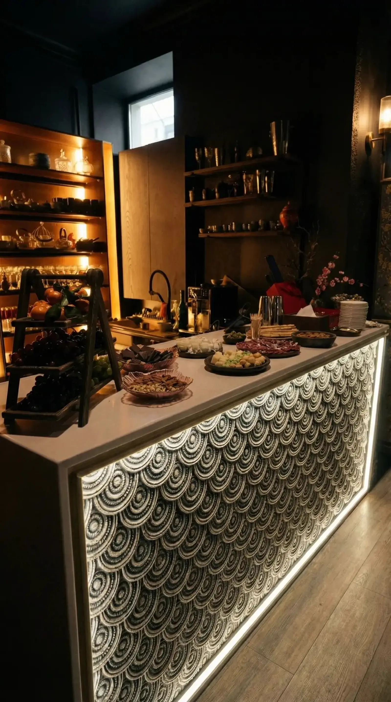

Для женских мероприятий, закрытых групп и встреч, где хочется не только красоты, но и внутреннего содержания.
Женская трансформация
Пробуждение женских архетипов
от
8 500 ₽
с гостя
Глубинная практика самопознания и работы с ролями. Каждая участница исследует свои архетипы и видит собственную силу в зеркале группы.

Практика соединяет разговор, символы, телесное внимание и групповое отражение. Ведущий помогает участницам бережно увидеть свои сильные стороны.
Появляется больше понимания себя, своих ролей, границ и энергии. Формат хорошо работает как центральная часть женского события.
В программу входит